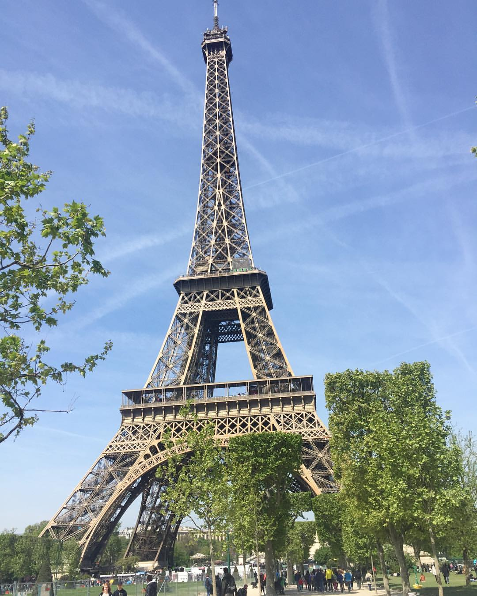
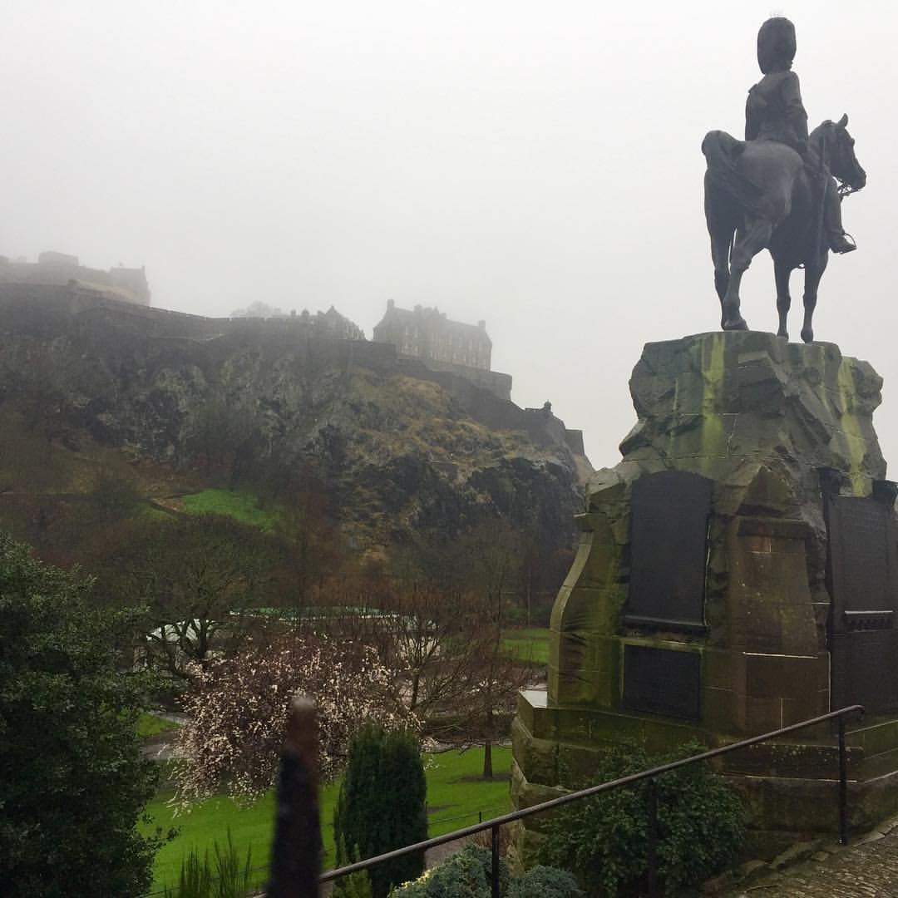

My Teaching Experience
In 2016 I applied to be a teaching assistant in a French high school.
Once I was accepted I flew off on an adventure of a lifetime! My teacher contract was for the entire
school year, during that period of time I was able to afford various trips. One of my favorite trips was the
weekend I spent in Paris. Overall it was a great experience and I was able to perfect my French!
My Weekend in Paris

The weekend in Paris was truly wonderful. It was spring and the weather couldn't have been better.
I spent the majority of the time walking around exploring all the neighbourhoods and did a bit of shopping. By the
end of the night I went back to the Eiffel Tower to watch it light up and grabbed a bottle of wine on the way there.
Lyon
Another great city in Burgundy is Lyon. Here is a lovely picture of the Seine River!
Scotland
I was also able to spend a week in England with my roomate. We were able to go up to Scotland and visit Edinburgh Castle!

England & a £1 Sausage Roll
Our trip to England was generally a cold and rainy trip. But I was able to meet my roommates family. I also was able to try
a sausage roll that are a very popular snack in the United Kingdom.